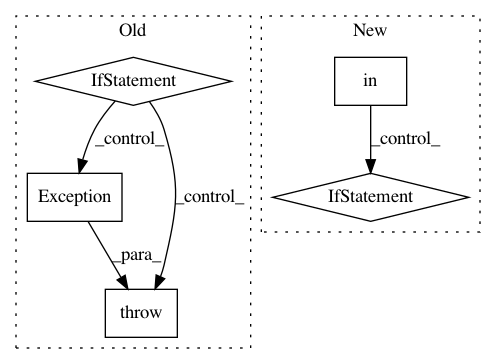

075c34d037ec564aa9c923a653c2cc3135c99510,keras/backend/tensorflow_backend.py,,pool2d,#Any#Any#Any#Any#Any#Any#,548
Before Change
// tf max_pool only supports float32
x = tf.cast(x, "float32")
if dim_ordering == "th":
// TF uses the last dimension as channel dimension,
// instead of the 2nd one.
// TH input shape: (samples, input_depth, rows, cols)
// TF input shape: (samples, rows, cols, input_depth)
// TH kernel shape: (depth, input_depth, rows, cols)
// TF kernel shape: (rows, cols, input_depth, depth)
x = tf.transpose(x, (0, 2, 3, 1))
if pool_mode=="max":
x = tf.nn.max_pool(x, pool_size, strides, padding=padding)
elif pool_mode=="mean":
x = tf.nn.avg_pool(x, pool_size, strides, padding=padding)
else:
raise Exception("Invalid pooling mode: " + str(pool_mode))
x = tf.transpose(x, (0, 3, 1, 2))
elif dim_ordering == "tf":
if pool_mode=="max":
x = tf.nn.max_pool(x, pool_size, strides, padding=padding)
elif pool_mode=="mean":
x = tf.nn.avg_pool(x, pool_size, strides, padding=padding)
else:
raise Exception("Invalid pooling mode: " + str(pool_mode))
else:
raise Exception("Unknown dim_ordering: " + str(dim_ordering))
if _FLOATX == "float64":
x = tf.cast(x, "float64")
return x
After Change
// tf max_pool only supports float32
x = tf.cast(x, "float32")
if dim_ordering in {"tf", "th"}:
if dim_ordering == "th":
// TF uses the last dimension as channel dimension,
// instead of the 2nd one.
// TH input shape: (samples, input_depth, rows, cols)
// TF input shape: (samples, rows, cols, input_depth)
// TH kernel shape: (depth, input_depth, rows, cols)
// TF kernel shape: (rows, cols, input_depth, depth)
x = tf.transpose(x, (0, 2, 3, 1))
if pool_mode == "max":
x = tf.nn.max_pool(x, pool_size, strides, padding=padding)
elif pool_mode == "avg":
x = tf.nn.avg_pool(x, pool_size, strides, padding=padding)
else:
raise Exception("Invalid pooling mode: " + str(pool_mode))
if dim_ordering == "th":
x = tf.transpose(x, (0, 3, 1, 2))
else:
raise Exception("Unknown dim_ordering: " + str(dim_ordering))
if _FLOATX == "float64":
In pattern: SUPERPATTERN
Frequency: 3
Non-data size: 5
Instances
Project Name: keras-team/keras
Commit Name: 075c34d037ec564aa9c923a653c2cc3135c99510
Time: 2015-12-07
Author: max.pumperla@googlemail.com
File Name: keras/backend/tensorflow_backend.py
Class Name:
Method Name: pool2d
Project Name: AlexEMG/DeepLabCut
Commit Name: 96da2cacf837a9b84ecdeafb50dfb4a93b402f33
Time: 2021-01-06
Author: tr.biasi@gmail.com
File Name: deeplabcut/pose_estimation_tensorflow/nnet/net_factory.py
Class Name:
Method Name: pose_net
Project Name: tensorlayer/tensorlayer
Commit Name: 87aeace11d364ece7c8fae8ddab02786e5a2492e
Time: 2019-01-23
Author: zhangjqsmiling@gmail.com
File Name: tensorlayer/layers/core.py
Class Name: Layer
Method Name: __call__